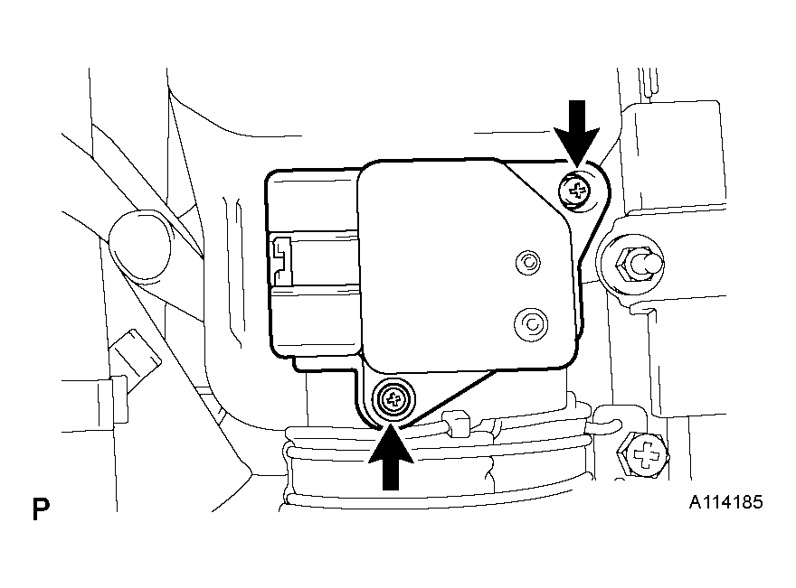

Mass Air Flow Meter: Installation
- INSTALL MASS AIR FLOW METER
- Install a new O-ring to the MAF meter.
- Install the MAF meter with the 2 screws.
- Connect the MAF connector.

Courtesy of © TOYOTA, LICENSE AGREEMENT TMS1002
- CONNECT CABLE TO NEGATIVE BATTERY TERMINAL